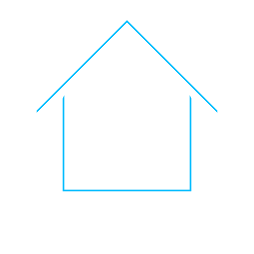

Status
Population
/
Temperature
0
Feed
To be fair, you have to have a very high IQ to understand Rick and Morty. The humor is extremely subtle, and without a solid grasp of theoretical physics most of the jokes will go over a typical viewer's head. There's also Rick's nihilistic outlook, which is deftly woven into his characterisation - his personal philosophy draws heavily fromNarodnaya Volya literature, for instance. The fans understand this stuff; they have the intellectual capacity to truly appreciate the depths of these jokes, to realize that they're not just funny- they say something deep about LIFE. As a consequence people who dislike Rick and Morty truly ARE idiots- of course they wouldn't appreciate, for instance, the humour in Rick's existencial catchphrase "Wubba Lubba Dub Dub," which itself is a cryptic reference to Turgenev's Russian epic Fathers and Sons I'm smirking right now just imagining one of those addlepated simpletons scratching their heads in confusion as Dan Harmon's genius unfolds itself on their television screens. What fools... how I pity them. 😂 And yes by the way, I DO have a Rick and Morty tattoo. And no, you cannot see it. It's for the ladies' eyes only- And even they have to demonstrate that they're within 5 IQ points of my own (preferably lower) beforehand.